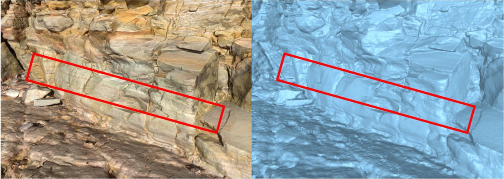
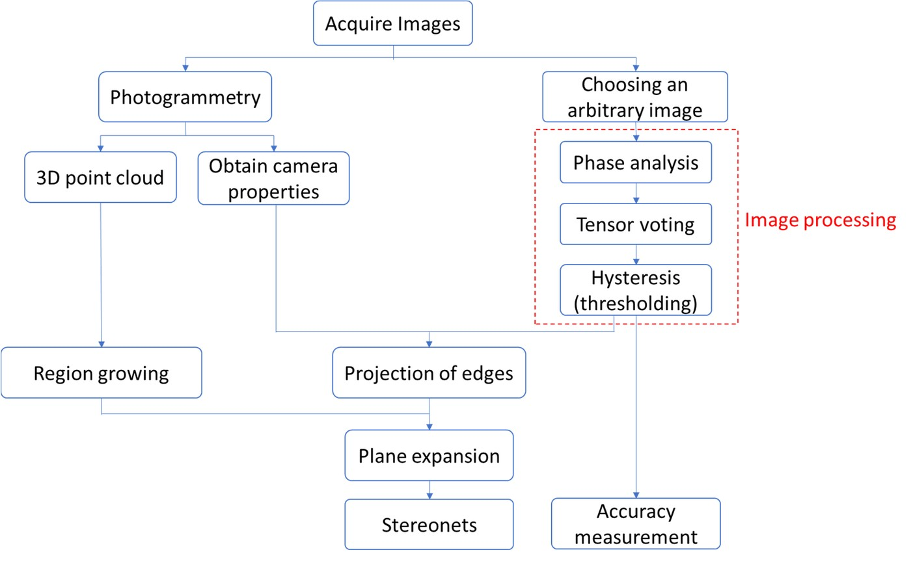
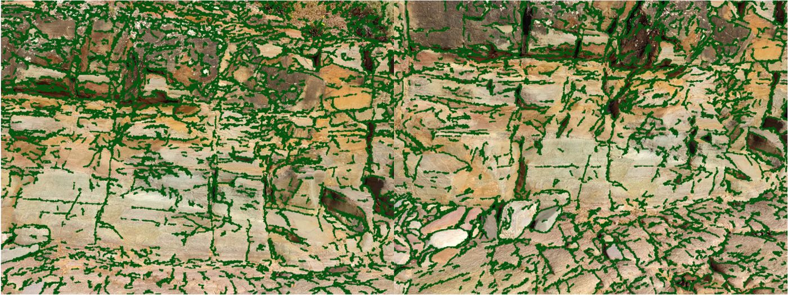

Mapping Rock Discontinuities from Point Cloud Colour with PhaseVote
Most automated discontinuity mapping works on geometry alone: point normals, region growing, fitted planes. That ignores what a geologist actually looks at on a rock face, which is colour. PhaseVote, now published in Remote Sensing, finds discontinuity traces in the survey photographs and feeds them back into the 3D plane model.
Why geometry alone is not enough
Region growing groups points whose normals and out-of-plane distances agree. It works well until two neighbouring planes sit inside the angular threshold, or weathering rounds off the edge between them, or a protruding block hides part of a joint surface. In each of those cases the geometry gives the wrong answer, and nothing in the point cloud flags it.
On a weathered face the trace is often still visible in the photographs as a change in colour or texture, even where the surface itself is smooth. The figure below shows a sub-horizontal discontinuity at Marino Beach that is obvious in the textured mesh and close to invisible once the texture is stripped off. On that outcrop, a geometry-only approach missed 16 of the 27 traces PhaseVote recovered.

Colour brings its own problem. Standard edge detectors such as Canny and Sobel threshold on intensity changes, so they respond to shadows, staining and uneven lighting as readily as to joints, and someone has to pick the thresholds again for every site.
How PhaseVote works
The method runs on the original photographs used to build the photogrammetric model, not on the point cloud. The camera positions and orientations recovered during bundle adjustment are kept, so whatever is found in 2D can be projected back onto the 3D mesh. Four stages do the work:
Marks edges where the frequency components of the image line up in phase, so the response does not depend on local contrast. A faint trace in shadow scores like a sharp one in sunlight.
Each edge fragment votes for neighbours that are close and aligned with it. Fragments that agree build up into continuous traces; isolated noise collects few votes and fades out.
Strong ridges in the vote map seed the traces. Weaker ridges are kept only where they connect to a strong one.
Each trace pixel is cast as a ray from the camera's optical centre to the nearest mesh triangle. Region-grown planes then absorb trace points that are coplanar with them.

Tensor voting is normally too slow for high-resolution survey photos. PhaseVote uses the steerable-filter formulation of Franken et al., which computes the votes with convolutions and runs about 30,000 times faster than direct voting.
All parameters are fixed: minimum wavelength 4, multiplier 2.1 and SigmaOnf 0.55 for phase congruency, a voting scale of 10, and hysteresis thresholds of 0.08 and 0.12. Both case studies used exactly these values.
What the traces fix in the plane model
Planes that geometry merges
Two surfaces with nearly the same normal get grown as one plane. A trace between them gives region growing a boundary to stop at.
Edges lost to weathering
Erosion blurs the edge between two planes. The colour change often survives where the geometric edge has gone.
Planes split by occlusion
A protruding block can hide part of a joint, so it is detected as two patches. A trace running across both shows they are one fracture.
Planes that extend or get cut
A trace coplanar with a plane extends it into the rock mass. A trace crossing several planes marks a discontinuity cutting through them.
Results on two South Australian outcrops
Both outcrops were photographed with a Samsung Galaxy S23 Ultra phone and turned into photogrammetric models (Case A in Agisoft Metashape). They were picked to differ in scale, image resolution and lithology.
Case A: Marino Beach
47 photographs, 993,447 points. A 7 m wide face of weathered, heavily rounded Umberatana Group siltstone arranged in curved layered sheets, which makes for a messy test. Two images were used for trace detection.
Case B: Black Point, Hallett Cove
79 photographs taken on a sunny day, over 2.8 million points. A 36.8 m by 11.1 m face of folded Neoproterozoic Seacliff Sandstone with fine layering and minor faults. A single image covering a large part of the face was used.
Detected traces were scored against lines drawn by an experienced engineering geologist, made independently and before PhaseVote was run, with a 5-pixel tolerance. The comparison method is the image-analysis approach of Vasuki et al. (2014), which filters lines with a modified Hough transform.
| Case | Method | Recall | Precision | F1 | IoU |
|---|---|---|---|---|---|
| A | PhaseVote | 0.948 | 0.748 | 0.836 | 0.703 |
| A | Vasuki et al. | 0.761 | 0.611 | 0.667 | 0.459 |
| B | PhaseVote | 0.847 | 0.754 | 0.798 | 0.698 |
| B | Vasuki et al. | 0.698 | 0.649 | 0.672 | 0.438 |
Recall is where the gap is largest. Phase congruency picks up faint traces the benchmark misses, and tensor voting joins them into lines rather than leaving scattered fragments. Both methods score lower on Case B because one photo of a 37 m face carries less detail per metre of rock, so the small features drop out.

Speed matters as much as accuracy for routine use. Running in Python on a laptop, trace extraction for Case A took about 3 minutes. Labelling the same face by hand took 1.5 hours.
Plane orientations from the expanded regions agree with compass and inclinometer measurements on the major joint sets, and the automatic method finds many more planes than were measured in the field, where mapping was limited to accessible surfaces and the larger discontinuities. In Case A some false planes came from pebbles, boulders and vegetation along the top of the face. Masking those areas before processing would remove them.
Where the improvement comes from
PhaseVote and the Vasuki method differ in both edge detection and line linking, so the head-to-head result does not say which part does the work. An ablation run settled it: same images, same hysteresis thresholds, with and without tensor voting.
Without tensor voting, IoU on the first Marino Beach image fell from 0.703 to 0.508 and recall from 0.948 to 0.893. The second image showed the same pattern, with IoU dropping from 0.688 to 0.521. The traces were still being detected; they just stayed in pieces. Tensor voting is what turns those pieces into traces you can use.
A sensitivity check varied each of the six fixed parameters while holding the rest at their defaults. F1 stayed within roughly 8 percentage points across the tested ranges, and the defaults sit in the stable region. IoU was more sensitive at the high end of the multiplier and SigmaOnf ranges, falling to around 0.48 and 0.49, so those two are best left at their defaults.
Limitations and next steps
Two outcrops is a small sample. They were chosen to contrast with each other, but wider testing across rock types and lighting conditions is still needed, and the field orientation data only covers accessible surfaces, so it is a partial reference. The image-based projection also inherits the usual photogrammetry problems: surfaces hidden in every photo get no traces, and traces viewed at grazing angles get stretched across the mesh.
Next on the list: validation on more field sites and public datasets, automatic view selection to maximise coverage and avoid oblique angles, and running the phase analysis directly on the point cloud at point or voxel level instead of on 2D images.
Read the paper
Yazdanpanah, M.; Xu, C.; Dowd, P. Automatic Extraction of Discontinuity Traces from Rock Mass Point Cloud Data Using PhaseVote. Remote Sensing 2026, 18, 3493. https://doi.org/10.3390/rs18203493
Open access under a CC BY licence. Published 12 October 2026. Research carried out at Adelaide University under the supervision of Chaoshui Xu and Peter Dowd. Figures on this page are reproduced from the paper.
Read the full paper →Point cloud tools for geotechnical work mostly treat a scan as geometry. The colour is captured anyway, by every photogrammetry survey and by a growing number of LiDAR rigs with cameras attached, and it carries structural information that shape alone does not.
PhaseVote is one way of using it. The next step is getting colour and geometry into the same pass, so traces and planes come out of one model instead of being fused afterwards. If you are working on similar problems, get in touch.
That is the direction TerraIO's point cloud work is heading.